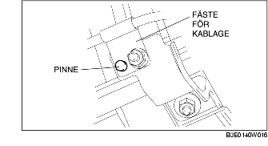

DEMONTERING/MONTERING AV UPPVÄRMD SYRESOND (HO2S) [LF]
B3E014018860W09
-
Varni ng
-
• En het motor och ett hett avgassystem kan orsaka allvarliga brännskador. Stäng av motorn och låt den svalna innan du börjar demontera avgassystemet.
1. Demontera batterikåpan.
2. Lossa batteriets minuskabel.
3. Ta bort skyddet över plugghålet.
4. Ta loss syresondkontakten.
5. Demontera i den ordning som anges i tabellen.
.
|
1
|
Främre syresond (HO2S)
|
|
2
|
Kablagefäste
|
|
3
|
Bakre syresond (HO2S)
|
Observera vid demontering av HO2S syresond
1. Demontera syresonden med specialverktyget.
Observera vid montering av kablagefäste
-
Observera
-
• Det kanske inte finns något stift (någon pinne). Om det inte finns något stift, lås kablagefästet mot rotationen och dra åt muttern.
